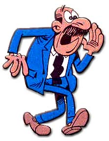
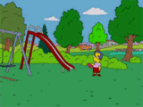

Pitufo (idioma)
 De: La Frikipedia, la enciclopedia extremadamente seria.
De: La Frikipedia, la enciclopedia extremadamente seria.
| De la serie idiomas del mundo:
|
| Pitufo (idioma)
|
|
|
| Hablante típico de Pitufo (idioma)
|
|
| Familia
|
Pitufa
|
| Número de hablantes
|
Todos los pitufos que conozcas
|
| Hablado en
|
El bosque de los pitufos y Guam
|
| Hablado por
|
Pitufos y Satán
|
| Artificial o Natural
|
Natural
|
| Nivel de frikismo
|
Si eres Pitufo, poco, si no, mucho.
|
| Dificultad
|
Pitufal
|
| Truqui para dominarlo
|
Cambiar la mitad de las palabras por Pitufo
|
| Máximo exponente
|
Tú
|
| Ejemplo de uso
|
Pos yo a la pitufina, me la pitufaba
|
«¡¡Son tan pitufantásticos que me los pitufaba a todos!!»
~ Quevedo sobre los pitufos.
«¡Qué ricos estaban estos Pitufos!»
~ Falete paseando por el bosque.
«Tenemos constancia de que Pitufo Laden tiene armas de destrucción masiva.»
~ Bush siendo imbécil presidente.
Pitufado por el anarco-sindicalista Papa Pitufo en la Edad Media, el idioma pitufo se habla en el bosque de los Pitufos y el la pitufástica isla de Guam (resultado de dividir una calabaza entre dos pepinos), además de ser lengua cooficial en países como Francia o Espiña durante los años 50.
Creación
Primer Pitufo o Pitufo Antiguo
La pitulengua que hoy en día habla el pueblo pitufo tiene su origen en la Edad Media. Apareció en esta época porque fue en esta cuando, en el sur de Francia, apareció el primer poblado pitufo (mezcla de elfos y excrementos del Doctor Manhattan). El poblado tenía como idiomas oficiales el francés y el élfico, lo que, normalmente, causaba graves problemas de entendimiento entre distintas pitufamilias. La vida pitufa avanzó durante años con estas complicaciones, que incluso derivaron en pequeñas guerras, creando cierta división social en tres grupos: Pitufenómenos (entendían ambos idiomas), Pitufeladores (solo hablaban élfico) y Pitufashions (hablaban francés). También es cierto que por el continuo roce tanto el francés como el élfico se habían violado mutuamente generando desviaciones de la norma estricta de cada lengua.
La condición sociolingüística sufrió un grave revés cuando el cuarto presidente de la pirturepública dio un pitugolpe de estado convirtiéndose en PITUNESVOL I emperador de Pitufilandia y decidió invadir las montañas mohosas de Alemania. Una vez logrado hizo llamar a Pitúcrates para reunirse con él y se encerrarón en un harén con 18.000 pitotutas, dos Pitufenómenos, dos Pitufeladores, dos Pitufashions y dos esclavos alemanes, durante 3 años.
Al término de ese encierro entregaron al pueblo pitufo “EL PITUCCIONARIO DE LA LENGUGA PITUFÁSTICA O PITUFO” compuesta por 444.448 páginas en las que se desarrollaban las bases de una nueva lengua.
EL PITUCCIONARIO DE LA LENGUGA PITUFÁSTICA O PITUFO

Algunas razas solo utilizan el Pitufo a la hora del coito.
El libro utilizaba la primera hoja como dedicatoria a la madre de PITUNESVOL I agradeciéndole la enorme calidad de la leche que sus pitubres emanaron para alimentarlo de pequeño.
Después, las 400.004 páginas restantes eran un prólogo citando las fuentes, estudios demográficos, lingüísticos y demás realizados para poder crear el idioma. Tras citar las fuentes, para gozo del pobre lector, que llevaba tantísimas páginas leídas se introdujeron 44.000 viñetas eróticas. Tras este merecido descanso para el lector se explicó, en un texto que ocupó 440 paginas, cómo todos esos datos analizados llevaban a la conclusión de que el nuevo idioma debería ser el latín ya que deriva del élfico y el francés deriva del latín. En las 2 páginas siguientes se introdujo una lista de las nuevas palabras todas ellas creadas con el prefijo pitu- y adaptaciones fonéticas de términos de otras lenguas. En la última página solo aparecía la firma del emperador.
Evolución del Pitufo Antiguo
El emperador PITUNESVOL I impuso un plan de estudios extremadamente exigente para que sus pitubditos aprendiesen el idioma con increíbles resultados. En menos de dos años todo el pueblo hablaba esa nueva lengua con total facilidad.
Aunque por escrito se utilizaba única y exclusivamente el Pitufo Auténtico de manera escrupulosa en todos los textos, incluso en las pintadas de “Pepito estuvo aquí” ("Pepito pitu是 hic" en Pitufo). Se sabe que con el transcurso de las décadas el Pitufo hablado fue gradualmente modificándose, principalmente por influencia de los nuevos pueblos que conquistaban. Se cree, debido a comentarios de Marty McFly tras uno de sus viajes al pasado, que durante los siglos XVI y XVII (caundo murió PITUNESVOL I y le sucedió Pitúcrates) se produjeron los cambios más radicales. El primer texto escrito en un pitufo mucho más evolucionado proviene de una carta de un pitufo americano para felicitar el día de Pituacción de Gracias a un cuñado del poblado pitufo de Groenlandia.
Pitufo moderno o simplemente Pitufo
En los años 30, solo la alta sociedad hablaba el pitufo antiguo, mientras que la clase baja, que era la gran mayoría de los pitufos que quedaban (muchos fueron exterminados por Adolf PituHitler, el Gran Pitufo del antiguo continente que pituenloqueció y acabó con su propia especie) eran una panda de vagos y maleantes de los barrios bajos de Chicago, donde se creó la P.I.T.U.F.O.S que quiere decir “Perversa e Inhumana Tropa de Uso Fatal Obediente a Satán”, una subdivisión del Pastafarismo. Esta asociación pitufal trabajó en la clandestinidad hasta que en 1968 Richard Pitufo Nixon les echó del país, destruyendo así la mayoría de sus escritos en pitufo antiguo.
El anarco sindicalista Papá Pitufo (nieto y fiel pupilo de Pitúcrates), tras este duro golpe, se pitufó una lancha y se fue a Burgos, al sur de Bilbao. Pitufó unas setas gigantes, tal y como decían las enseñanzas de su abuelo, y con EL PITUCCIONARIO DE LA LENGUGA PITUFÁSTICA O PITUFO comenzó la reelaboración de una pitugramática nueva acorde con las características de los pitufos sobrevivientes. Como del libro, escrito en parte por su abuelo, solo quedaban las últimas 3 páginas, Papá Pitufo escribió una serie de 25 normas que adaptaban el castellano al estilo pitufo.
Las 25 normas del Pitufo
Este tío es un novato. Pero aun así se atrevió a hacer un anuncio en un Pitufo muy pobre.

Profesor de Pitufo del 97,58% de los Pitufohablantes de la Península Ibérica y autor del artículo.

Doraemon no sabe hablar Pitufo y mira cuanto le importa.
- 1.- Toda palabra simple proveniente del castellano con 4 o más sílabas lleva obligatoriamente, en pitufo, el prefijo Pitu-. Por ejemplo: Pituexternocleidomastoideo, pituecuménico, pitorrinolaringólogo…
- 2.- Las palabras de tres sílabas que no son esdrújulas también se preceden del prefijo Pitu-. Por ejemplo: Pitupatata.
- La única excepción para esta regla está en la palabra 'Emprendedor' que, en pitufo, es sustituida por Entrepreneur, la cual, a pesar de tener 4 sílabas, no lleva el prefijo Pitu-.
- 3.- Toda palabra que empiece por las vocales “O” y “U”, o que empiece por “H” y que en Pitufo lleven el prefijo pitu- pierden esa vocal o la vocal y la “H”. Por ejemplo: Piturrágia, pitorrinolaringólogo…
- 4.- Cuando se quiere resaltar la importancia de un término en concreto se le añade el prefijo Pitu-.
- 5.- Antes de “B” de burro y “P” de pituprostituta se escriben dos letras “N” seguidas. Por ejemplo: Ennpollar, pitunnburguesa.
- 6.- Todas las siglas o acrónimos van precedidas por el prefijo Pitu-. Por ejemplo: PituC.PituI.PituA.
- 7.- Todo nombre propio se compone de: Primer Nombre Segundo Nombre y Apellido, siendo el segundo nombre Pitufo. De no seguir esta norma seguirá la siguiente: PituNombre Primer Apellido Segundo Apellido. Por ejemplo: Michael Pitufo Fox o Pitualexander Grahan Bell.
- 8.- Las únicas excepciones a la norma anterior son: Sahsa Grey, Josep Lluis Carod Rovira, aquí y en la china popular y Pedro Calderón de la Barca y Barreda González de Henao Ruiz de Blasco y Riaño.
- 9.- Para la realización de una orden en imperativo se ha de colocar el prefijo pitu- al sujeto y al verbo. Por ejemplo: Pituvosotros pitucallad. Pituimbécil calla.
- 10.- En el caso del subjuntivo solo el verbo es el que lleva el prefijo. Por ejemplo: Ojalá ella se pituabriese de
piernas mente.
- 11.- El modo indicativo, en un principio, no lleva el prefijo (salvo por motivos de alguna de las otras 24 reglas). Pero se puede utilizar para enfatizar. Si se usa en el sujeto tiene un matiz de desaprobación, si se utiliza en el verbo es un matiz de alegría.
- 12.- La letra “Q” solo irá acompañada de una “U” cuando la palabra tenga menos de 5 letras. Por ejemplo: Que, Reqesón.
- 13.- Las unidades de medida del SI llevan todas el prefijo Pitu- y al símbolo se le añada una “P” minúscula. En cambio los derivados no .Por ejemplo: Pitukilogramo (pKg), pitunewton (pN), pitulitro (pL). Y no: Pitudecalitro, pitugramo, pitukilómetros….
- 14.- Todo término tecnológico va precedido por el prefijo Pitu-. Por ejemplo: Pitordenador, pirumódem.
- 15.- El término Amén no existe. Se sustituye por ¡Pitufemos! (Gritado muy fuerte).
- 16.- Los títulos como Señor, Don, Doctor… no existen en Pitufo, se sustituyen todos por la palabra Pitu que precede al nombre acompañado del prefijo Pitu-. Por ejemplo: Pitu PituManolo.
- 17.- La “W” es sustituida por el símbolo de Batman y, cuando acompaña a una “I” se pronuncia “Pitú”.
- 18.- Si, por cualquier razón, llevas 7 palabras seguidas que no empiezan por el prefijo pitu-, la siguiente, sea cual sea debe empezar por ese prefijo.
- 19.- El verbo pitufar significa cualquier cosa.
A pesar de lo que un lector inexperto, que haya leído hasta aquí, pudiese creer, el Pitufo no es solo añadir el prefijo Pitu-, es básico, clave, crucial, pero no es lo único y las últimas cinco normas dan fé de ello:
- 20.- Concuspiciente es el insulto más fuerte que existe en el idioma pitufo.
- 21.- Gracias se dice: Tancabe. Muchas gracias: Hantale Tancabe. Y por favor: Alassea Ree.
- 22.- El saludo pitufo es la palabra: Briuché. Y la despedida: Zitope.
- 23.- Términos como "¡¡Toma, toma!!", "¡¡Flipa, flipa!!" o "¡Locurón!" son perfectos para iniciar una frase.
- 24.- Cuando se invita a alguien que está en la puerta a entrar ('pasa, pasa' 'vamos, entra' 'adelante, como en tu casa'...) se dice: Aniram al ne etasila.
- 25.- "Ahí va la ostia pues" se puede utilizar perfectamente en lugar de "No me pitufes" y también sirve para darle mayor rimbombancia a nuestra conversación siempre que queramos.
A mayores, se recomienda hablarlo con un poco de acento Andaluz. Como es obvio no resulta un idioma con el cual conseguir que la gente te respete.
Donde se habla
 Él introdujo el Pitufo como lenguaje secreto de la
TIA.
Actualmente la lengua pitufa solo existe en territorio español.
- Está muy arraigado en la zona norte de Castilla y León.
- En algunas zonas de País Vasco, pero en la intimidad para no ser apaleado.
- En Andalucía, en el pueblo de Juzcar es considerado dialecto oficial del Andaluz.
- En la discoteca Pachá a partir de las 5 de la mañana.
- Se tiene constancia de su utilización en Moncloa.
- En la universidad complutense de Madrid.
Dialectos
No se consideran dialectos de este idioma porque al ser tan jodidamente copia del castellano voluntarioso y libre, es muy difícil considerar desviaciones de la norma que se sigan manteniendo dentro del idioma. Por eso surge muchas veces el debate de si el idioma que habla Nacho Vidal con sus presas compañeras sexuales es Pitufo o un nuevo idioma, ya que este utiliza el prefijo pene-.
¿Para qué se utiliza
Único ser completamente azul que no sabe hablar el Pitufo.
Salvo el uso dentro de la comunidad pitufa, la utilización de este idioma tiene alguna finalidad más allá de la simple comunicación, por eso recogemos las principales motivaciones del uso del Pitufo:
- Para salir del armario.
- Para conseguir el certificado de retrasado mental y obtener una paga del Estado.
- Para comunicarte con Los Pitufos.
- Para demostrar que eres azul.
- Para dar mayor expresividad a los orgasmos.
- Para contagiar el Sida.
- Para demostrar el acérrimo fanatismo a la saga de películas de Los Pitufos y el odio extremo a Jar Jar Binks.
- Para solicitar el auxilio de Spiderman.
- Para exponer una tesis doctoral en bioquímica molecular.
- Para ocultar la ausencia de testículos.
- Para gobernar Alemania.
- Para el NO-DO.
- Para triunfar en Youtube.
- Para fracasar en Youtube.
Poesía Pitufa

|
Los pitufos Pinzones, eran unos Pitufones
Que se fueron con Colón, que era otro Pitufón
Una pitufa muy maja, a Colon le hizo una pitufaja
Y se fueron a Calcuta, a contratar a una pitufas
Pero los Pitufos, molones, les cortaron los caminos
Típica poesía Pitufa, en la que se demuestra su arte para con las letras
|

|
|
|
 Milhouse, usuario habitual de Pitufo.
|
|
Me pitugusta ver el pitucielo
con negros nubarrones
y oír los pituaqilones
piturrísonos bramar,
me pitugusta ver la pitunoche
sin pituluna y sin pituestrellas,
y sólo las centellas la tierra iluminar.
Me pituagrada un pitucementerio
de muertos bien relleno,
manando sangre y pitucieno
que innpida el respirar,
y allí un pitusepulturero
de tétrica mirada
con mano despiadada
los cráneos machacar.
Me pitualegra ver la pitubonnba
caer mansa del pitucielo,
e inmóvil en el pitusuelo,
sin mecha al parecer,
y luego ennbravecida
que estalla y que se agita
y rayos mil vomita
y muertos por doqier.
Que el pitutrueno me pitudespierte
con su ronco estannpido,
y al mundo adormecido
le pituga estremecer,
que rayos cada pituinstante
pitucaigan sobre él sin cuento,
que se pitunda el pitufirmamento
me pituagrada mucho ver.
La llama de un pituincendio
que pitucorra devorando
y muertos apilando
pituqisiera yo encender;
tostarse allí un anciano,
volverse todo tea,
y oír como chirrea
¡qué gusto!, ¡qué placer!
|
Me pitugusta una campiña
de nieve tapizada,
de flores despojada,
sin fruto, sin verdor,
ni pájaros que pitucanten,
ni sol pituya que pitualunnbre
y sólo se pituvislunnbre
la muerte en derredor.
Allá, en sonnbrío pitumonte,
solar desmantelado,
me pituplace en sumo grado
la luna al reflejar,
moverse las pituveletas
con áspero pituchirrido
igual al alarido
que anuncia el expirar.
Me pitugusta que al Pituaverno
pitulleven a los pitumortales
y allí todos los males
les pitugan padecer;
les pituabran las pituentrañas,
les piturasguen los pitutendones,
pituronnpan los corazones
sin de ayes caso hacer.
Pituinsólita pituavenida
que inunda fértil vega,
de cunnbre en cunnbre llega,
y arrasa por doqier;
se lleva los pituganados
y las vides sin pausa,
y pituestragos miles causa,
¡qué gusto!, ¡qué placer!
|
Las voces y las risas,
el juego, las pitubotellas,
en torno de las pitubellas
alegres apurar;
y en sus pitulascivas bocas,
con voluptuoso pitulago,
un beso a cada trago
pitualegres estannpar.
Ronnper después las copas,
los platos, las pitubarajas,
y abiertas las pitunavajas,
buscando el pitucorazón;
oír luego los brindis
mezclados con pituqejidos
que lanzan los pituridos
en llanto y confusión.
Me pitualegra oír al uno
pedir a voces vino,
mientras que su pituvecino
se cae en un rincón;
y que otros ya pituborrachos,
en trino desusado,
cantan al dios vendado
innpúdica pitucanción.
Me pituagradan las pituqueridas
tendidas en los lechos,
sin chales en los pechos
y flojo el cinturón,
mostrando sus pituencantos,
sin orden el pitucabello,
al aire el muslo bello...
¡Qué gozo!, ¡qué ilusión!
|
Máxima expresión de poesía Pitufa
|
|
|
|
Autor(es):
- Kevrochi
- Tupo
- Miki.cat
- Generibot
- Darta
- Bpredspark
Frikipedia 2005-2016, Licencia
GFDL 1.2 - Extraído por FrikiLeaks